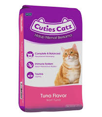

| 🐱 CUTIES CAT 🐱 |
|  |
CUTIES CAT 💰 Price: ₱120 per kilo 📌 Description: Cuties Cat is a premium cat food crafted to provide optimal nutrition for adult cats. Ensures strong immunity, healthy digestion, and a shiny coat for your feline companions. ✅ Key Benefits: - Strengthens immune system - Supports healthy digestion - Promotes shiny coat and healthy skin - Provides complete daily nutrition 🐱 Best For: Adult cats of all breeds 🕒 Feeding Guide: Feed daily with clean water. Adjust portions according to age, weight, and activity level of your cat. |